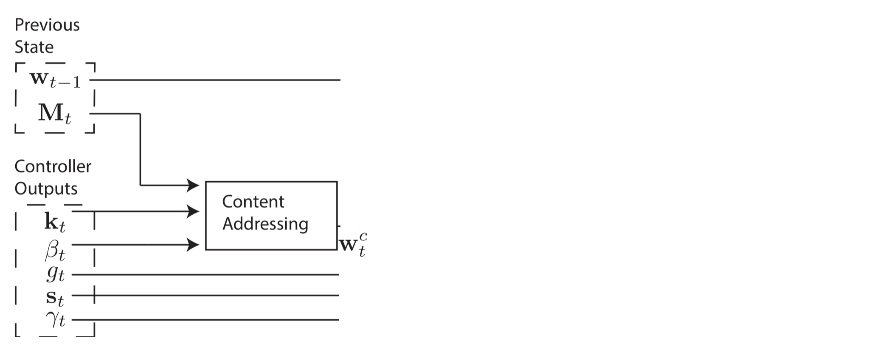
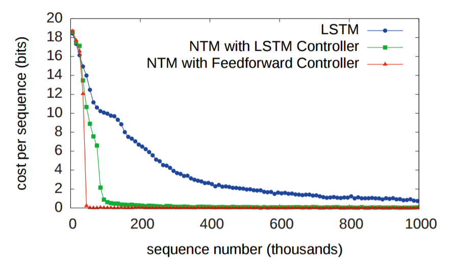
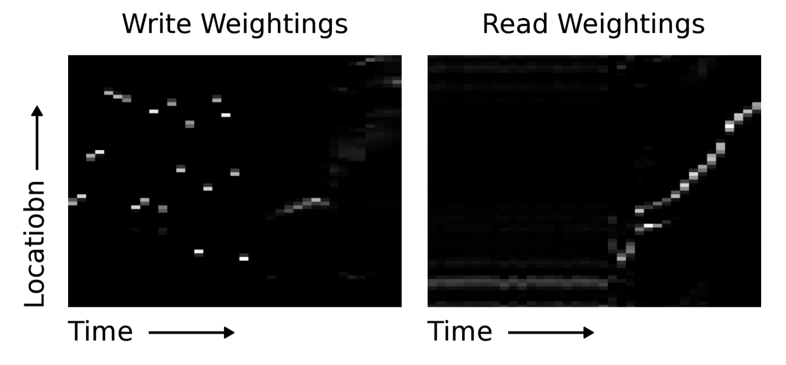

I've found that the overwhelming majority of online information on artificial intelligence research falls into one of two categories: the first is aimed at explaining advances to lay audiences, and the second is aimed at explaining advances to other researchers. I haven't found a good resource for people with a technical background who are unfamiliar with the more advanced concepts and are looking for someone to fill them in. This is my attempt to bridge that gap, by providing approachable yet (relatively) detailed explanations. In this post, I explain the titular paper - Neural Turing Machines.
I initially didn't intend to cover this paper, but another paper that I did want to cover wasn't making any sense to me, and since it used a modification of the NTM architecture, I decided to make sure that I really understood NTMs before moving on. Having done that, I'm now of the opinion that the other paper is somewhat poorly motivated. In contrast, the NTM paper is very well written and I highly recommend reading it.
Motivation
For the first thirty years of artificial intelligence research, neural networks were largely seen as an unpromising research direction. From the 1950s to the late 1980s, AI was dominated by a symbolic approach, which attempted to explain how information processing systems like the human brain might function in terms of symbols, structures and rules that could manipulate said symbols and structures. It wasn't until 1986 that a serious alternative theory emerged to challenge symbolic AI; its authors used the term Parallel Distributed Processing, but the more commonly used term today is connectionism. You might not have heard of this approach, but you've likely heard of its most famous modeling technique - artificial neural networks.
Two criticisms were made against neural networks as tools capable of helping us better understand intelligence. First, neural networks with fixed-size inputs are seemingly unable to solve problems with variable-size inputs. Second, neural networks seem unable to bind values to specific locations in data structures. This ability of writing to and reading from memory is critical in the two information processing systems we have available to study: brains and computers. How could these two criticisms be answered?
The first was answered with the creation of recurrent neural networks (RNNs). RNNs can process variable-size inputs without needing to be modified by adding a time component to their operation - when translating a sentence, or recognizing handwritten text, an RNN repeatedly receives a fixed-size input for as many time steps as is necessary. In this paper, Graves et al. seek to answer the second criticism by giving a neural network an external memory and the capacity to learn how to use it. They call their system a Neural Turing Machine (NTM).
Background
For computer scientists, the need for a memory system is clear. Computers have advanced tremendously over the past half century, but they are still composed of the three components: memory, control flow and arithmetic/logical operations. However, there's also biological evidence to suggest that having a memory system for quick storage and retrieval of information is helpful. This memory system has been termed working memory, and the NTM paper lists several earlier papers that have studied working memory from a computational neuroscience perspective.
Intuition
A NTM is fundamentally composed of a neural network, called the controller, and a 2D matrix called the memory bank, memory matrix or just plain memory. At each time step, the neural network receives some input from the outside world, and sends some output to the outside world. However, the network also has the ability to read from select memory locations and the ability to write to select memory locations. Graves et al. draw inspiration from the traditional Turing machine and use the term "head" to describe the specification of memory location(s). In the below image, the dotted line demarcates which parts of the architecture are "inside" the system as opposed to the outside world.

But there's a catch. Suppose that we index the memory $\mathcal{M}$ by specifying the row and the column, just like a typical matrix. We'd like to train our NTM using backpropagation and our favorite optimization method (e.g. stochastic gradient descent), but how do we take the gradient of a specific index? We can't. Instead, the controller will read and write using "blurry" operations that interact with all elements in memory to varying degrees. The Controller will produce weightings over memory locations that allow it to specify memory locations in a differentiable manner. Following the paper's lead, I'll explain how these weight vectors are generated after explaining how they're used (doing so makes understanding the system easier).
Mathematics
Reading
Let's refer to the memory matrix, with $R$ rows and $C$ elements per row, at time $t$ as $\mathcal{M}_t$. In order to read (and write), we'll need an attention mechanism that dictates where the head should read from. The attention mechanism will be a length-$R$ normalized weight vector $w_t$. We'll refer to individual elements in the weight vector as $w_t(i)$. By "normalized," the authors mean that the following two constraints hold:
The read head will return a length-$C$ vector $r_t$ that is a linear combination of the memory's rows $M_t(i)$ scaled by the weight vector:
Writing
Writing is a little trickier than reading, since writing involves two separate steps: erasing, then adding. In order to erase old data, a write head will need a new vector, the length-C erase vector $e_t$, in addition to our length-R normalized weight vector $w_t$. The erase vector is used in conjunction with the weight vector to specify which elements in a row should be erased, left unchanged, or something in between. If the weight vector tells us to focus on a row, and the erase vector tells us to erase an element, the element in that row will be erased.
After $\mathcal{M}_{t-1}$ has been converted to $\mathcal{M}_t^{erased}$, the write head uses a length-$C$ add vector $a_t$ to complete the writing step.
Addressing
Creating these weight vectors to determine where to read and write is tricky, so I'd like to step through the four-stage process. Each stage generates an intermediate weight vector that gets passed to the next stage. The first stage's goal is to generate a weight vector based on how similar each row in memory is to a length-$C$ vector $k_t$ emitted by the controller. I'll refer to this intermediary weight vector $w_t^c$ as the content weight vector. Another parameter, $\beta_t$, will be explained in just a second.
This content weight vector allows the controller to select values similar to previously seen values, which is called content-based addressing. For each head, the controller produces a key vector $k_t$ that is compared to each row of $M_t$ using a similarity measure. In this paper, the authors use cosine similarity, defined as:
A positive scalar parameter $\beta_t > 0$, called the key strength, is used to determine how concentrated the content weight vector should be. For small values of beta, the weight vector will be diffuse, but for larger values of beta, the weight vector will be concentrated on the most similar row in memory. To visualize this, if a a key and memory matrix produces a similarity vector [0.1, 0.5, 0.25, 0.1, 0.05], here's how the content weight vector varies as a function of beta.

The content weight vector thus is calculated as follows:
However, in some cases, we may want to read from specific memory locations instead of reading specific memory values. The example the authors give is the function $f(x, y) = x * y$. In this case, we don't care what the values of x and y are, just that x and y are consistently read from the same memory locations. This is called location-based addressing, and to implement it, we'll need three more stages. In the second stage, a scalar parameter $g_t \in (0, 1)$, called the interpolation gate, blends the content weight vector $w_t^c$ with the previous time step's weight vector $w_{t-1}$ to produce the gated weighting $w_t^g$. This allows the system learn when to use (or ignore) content-based addressing.
We'd like the controller to be able to shift focus to other rows. Let's suppose that as one of the system's parameters, the range of allowable shifts is specified. For example, a head's attention could shift forward a row (+1), stay still (0), or shift backward a row(-1). We'll perform the shifts modulo $R$ so that a shift forward at the bottom row of memory moves the head's attention to the top row, and similarly for a shift backward at the top row. After interpolation, each head emits a normalized shift weighting $s_t$, and the following convolutional shift is performed to produce the shifted weight $\tilde{w}_t$.
The fourth and final stage, sharpening, is used to prevent the shifted weight $\tilde{w}_t$ from blurring. To do this, a scalar $\gamma \geq 1$ is required.
And that's it! A weight vector can be computed that determines where to read from and write to, and better yet, the system is entirely differentiable and thus end-to-end trainable.
Experiments and Results
Copying
RNNs have historically struggled to remember information over long periods. The first experiment was designed to test whether having an external memory system allows for better performance. In the experiment, three systems were given a sequence of random eight bit vectors followed by a delimiter flag, and then ask to repeat the input sequence. An LSTM was compared against two NTMs, one that used a LSTM controller and another that used a feedforward controller. In the figure below, "cost per sequence" refers to the number of bits that a system incorrectly recalls over an entire sequence (sequence lengths. As you can see, both NTM architectures significantly outperform the LSTM.

Obviously, both the LSTM and the NTMs had learned some rudimentary copy algorithm. The researchers visualized how the NTM read from and wrote to (shown below). White is weight $1$, and black is weight $0$. The picture clearly displays that weightings over memory location were very focused.

Next, the researchers want to know how well the LSTM's and NTMs' algorithms could scale to sequences longer than anything the systems had been trained on. Since the training sequences had between 1 and 20 random vectors, the LSTM and NTMs were compared using sequences of lengths 10, 20, 30, 50 and 120. The next two images need a little explanation. There are eight blocks. The four top blocks represent the target sequences of lengths 10, 20, 30, and 50. Within the each block, a column of eight red and blue squares is used to visually indicate 1s and 0s. The brightly colored squares are used to indicate bits that had values other than 0.0 or 1.0.


As you can tell, the NTM produces far fewer errors for longer sequences. I couldn't find in the paper which NTM (the RNN controller or the feedforward controller) was used to produce the above image. The difference between the NTM and LSTM becomes more pronounced for longer sequences, as shown below for the 120 vector-long sequence.


Repeat Copying
The second experiment was to determine whether a NTM could learn a nested function (in this case, a nested for loop). In addition to being passed a sequence, the NTM was also passed a scalar value indicating how many times the NTM should output the copied input sequence. As you would expect, both NTMs outperformed the LSTM.

And, like before, the LSTM struggles to generalize its repeat copying algorithm, while the NTM does not.

Associative Recall
The third experiment was to determine whether NTMs can learn indirection i.e. one data item pointing to another. The authors fed in a list of items, and then queried one of the items in the list, with the expectation that the next item in the list be returned. As the authors point out, the fact that the feedforward-controller NTM outperforms the LSTM-controller NTM suggests that the NTM's memory is a superior data storage system than the LSTM's internal state.
And again, the NTMs outperform the LSTM when generalizing to a larger number of items in the list.

Dynamic N-Grams
The fourth task was designed to determine whether NTMs could learn posterior predictive distributions. The researchers designed N-grams (sequences of N items), which given previous items in the sequence, determine some probability distribution over the next item in the sequence. In this case, the researchers used binary 6-Grams. The optimal solution to an agent's ability to predict the next bit has a closed-form solution, and the NTMs both outperformed the LSTM and approached the optimal estimator.

Priority Sort
The fifth and final experiment tested whether the NTM can learn to sort data. 20 binary vectors were each given a scalar "priority rating" drawn uniformly from the range [-1, 1], and each system's objective was to return the 16 highest priority vectors in the input. By examining the NTMs' memories writes and reads, the researchers learned that the NTM used the priorities to determine approximately where each vector should be stored in order. Then, to produce the 16 highest priority vectors, the memory locations were read sequentially. This is visible in sequence of memory writes and reads.
For the last time, the NTMs outperform the LSTM.

Summary
- Neuroscience models of working memory and digital computer architecture suggest function might depend having an external memory
- Neural networks augmented with external memory offers a possible solution to a key criticism of connectionism, that neural networks are incapable of variable-binding
- Blurry reads and writes are differentiable, which are critical in allowing the controller to learn how to use its memory
- Evidence from five tasks demonstrates that NTMs can outperform LSTMs and learn more generalizable algorithms than LSTMs
Notes
I appreciate any and all feedback. If I've made an error or if you have a suggestion, you can email me or comment on the Reddit or HackerNews threads. I intend to create a mailing list (shoutout to Ben) and integrate RSS (shoutout to Uri) in the near future.